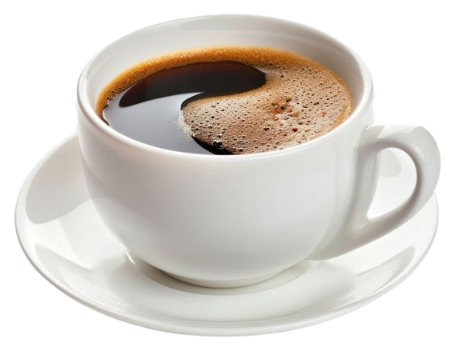
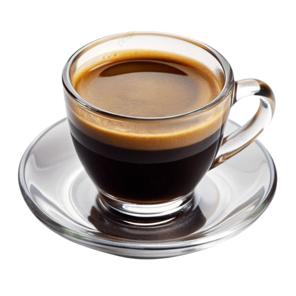
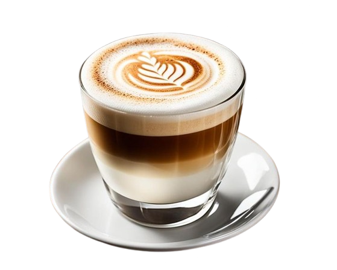

Selamat datang di website pengetahuan tentang kopi
Americano

Americano — campuran espresso dan air panas
Americano adalah minuman kopi yang dibuat dengan mencampurkan espresso dengan air panas. Minuman ini memiliki rasa yang lebih ringan dibandingkan dengan espresso murni, karena air panas mengurangi konsentrasi kopi. Americano biasanya disajikan dalam cangkir besar dan dapat dinikmati dengan tambahan gula atau susu sesuai selera.
Espresso

Espresso — dasar dari berbagai jenis minuman kopi
Espresso adalah metode penyeduhan kopi yang berasal dari Italia, di mana air panas dipaksa melalui bubuk kopi yang sangat halus dengan tekanan tinggi. Hasilnya adalah minuman kopi yang kuat, pekat, dan memiliki lapisan crema di atasnya. Espresso biasanya disajikan dalam porsi kecil dan menjadi dasar bagi banyak minuman kopi lainnya seperti cappuccino, latte, dan macchiato.
Latte

Latte — espresso dicampur dengan susu panas
Latte adalah minuman kopi yang terdiri dari satu atau lebih shot espresso yang dicampur dengan susu panas dan sedikit busa susu di atasnya. Rasio antara susu dan kopi dalam latte biasanya lebih tinggi dibandingkan dengan cappuccino, sehingga menghasilkan rasa yang lebih lembut dan creamy. Latte sering disajikan dalam gelas besar dan dapat dihias dengan seni latte (latte art) di permukaan busa susu.